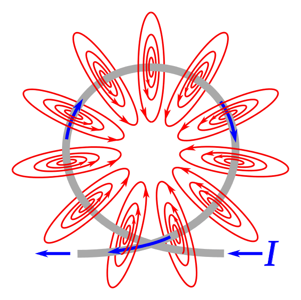
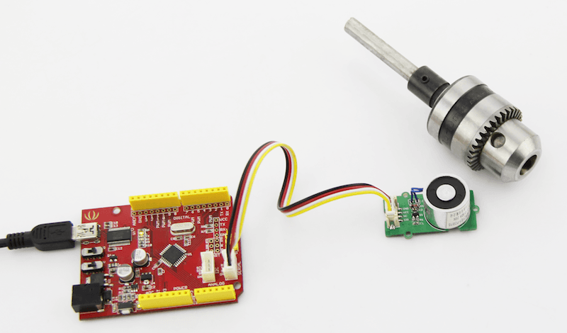
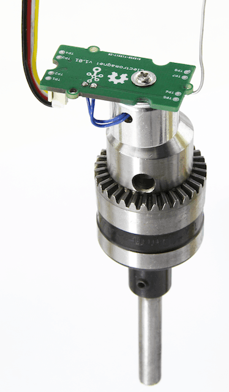

An electromagnet is a type of magnet in which the magnetic field is produced by electric current. An electric current flowing in a wire creates a magnetic field around the wire, due to Ampere's law(see drawing below). To concentrate the magnetic field, in an electromagnet the wire is wound into a coil with many turns of wire lying side by side. The magnetic field of all the turns of wire passes through the center of the coil, creating a strong magnetic field there. Grove - Electromagnet can shuck 1KG weight and hold on. it easy to use, to learn electromagnet principle.

 
CODE:
/*
Turns on an Electromagnet on for one second, then off for one second, repeatedly.
This example code is in the public domain.
*/
int Electromagnet = 0;
int LED = 13;
// the setup routine runs once when you press reset:
void setup() {
// initialize the digital pin as an output.
pinMode(Electromagnet, OUTPUT);
pinMode(LED, OUTPUT);
}
// the loop routine runs over and over again forever:
void loop() {
digitalWrite(Electromagnet, HIGH); // turn the Electromagnet on (HIGH is the voltage level)
digitalWrite(LED, HIGH); // turn the LED on (HIGH is the voltage level)
delay(1000); // wait for a second
digitalWrite(Electromagnet, LOW);// turn the Electromagnet off by making the voltage LOW
digitalWrite(LED, LOW); // turn the LED off by making the voltage LOW
delay(1000); // wait for a second
}
1.You should have got a raspberry pi and a grovepi or grovepi+.
2.You should have completed configuring the development enviroment, otherwise follow here.
3.Connection
4.Navigate to the demos' directory:
cd yourpath/GrovePi/Software/Python/
nano grove_electromagnet.py # "Ctrl+x" to exit #
import time
import grovepi
# The electromagnet can hold a 1KG weight
# Connect the Grove Electromagnet to digital port D4
# SIG,NC,VCC,GND
electromagnet = 4
grovepi.pinMode(electromagnet,"OUTPUT")
time.sleep(1)
while True:
try:
# Switch on electromagnet
grovepi.digitalWrite(electromagnet,1)
print "on"
time.sleep(2)
# Switch off electromagnet
grovepi.digitalWrite(electromagnet,0)
print "off"
time.sleep(2)
except KeyboardInterrupt:
grovepi.digitalWrite(electromagnet,0)
break
except IOError:
print "Error"
5.Run the demo.
sudo python grove_electromagnet.py
File:Grove Electromagnet v1.0 SCH PCB.zip
Datasheet ZYE1-P20-15 PDF
Copyright (c) 2008-2016 Seeed Development Limited (www.seeedstudio.com / www.seeed.cc)